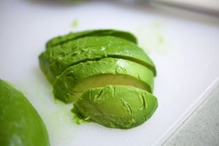
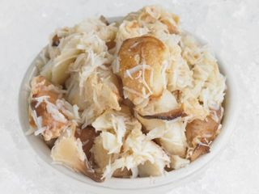
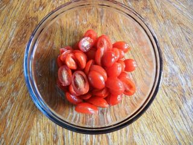
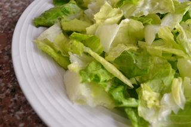
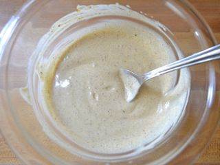

Шаг 1: подготавливаем ингредиенты.

Авокадо содержит большое количество различных витаминов и микроэлементов, которые благотворно влияют на здоровье человека. Не отстает от него и такой продукт как крабовое мясо, которое также содержит массу полезных веществ. По этому наш салат получится и вкусный, и очень полезный. Для начала промываем авокадо под проточной теплой водой от различных загрязнений и пыли, затем вытираем бумажными кухонными полотенцами и перекладываем на разделочную доску. С помощью ножа делаем поперечный надрез, таким образом, чтобы не задеть достаточно большую косточку фрукта. После, разъединяем половинки и ножом достаем косточку, её можно выкинуть она нам не понадобится. Очищаем кожуру и нарезаем мякоть фрукта на средний кубик размером до 1 сантиметра. Измельченный ингредиент перекладываем в глубокую тарелку.

Далее открываем банку с крабовым мясом и с помощью дуршлага над раковиной сливаем лишний сок. Затем кусочки мяса перекладываем на разделочную доску и с помощью ножа измельчаем либо кубиком, либо соломкой кому как больше нравится. После, убираем измельченный ингредиент в тарелку с авокадо.

Далее промываем под проточной водой помидоры черри, высушиваем бумажными кухонными полотенцами и перекладываем на разделочную доску. Так как данные овощи очень маленькие достаточно будет их разрезать пополам. Измельченный ингредиент перекладываем в тарелку к авокадо.

Листья салата промываем под проточной водой, над раковиной отряхиваем от лишней жидкости и перекладываем на разделочную доску. Теперь либо нарезаем ингредиент острым ножом, либо рвем руками на части, которые удобно будет кушать. И после этого, выкладываем листья салата в тарелку к авокадо.
Шаг 2: готовим заправку для салата.

В небольшую тарелку добавляем необходимое количество майонеза. Затем если у вас есть свежий лимонный сок, нужное количество ингредиента соединяем с майонезом, если нет, тогда берем лимон промываем его под проточной водой, обтираем кухонными бумажными полотенцами и с помощью ножа разрезаем его на две половинки. И далее или с помощью соковыжималки или руками выдавливаем сок. После того, как мы смешали майонез с лимонным соком в смесь добавляем черный молотый перец и соль. Далее тщательно все перемешиваем столовой ложкой и можно заправлять наш салат.